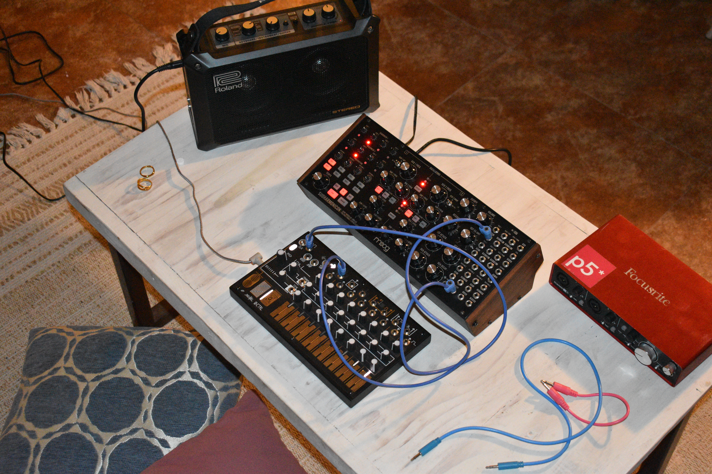

← Volver a proyectos

Grabaciones de sonido
Sonido · 2026Descripción pendiente — cuéntame sobre este proyecto para completar el texto.

Descripción pendiente — cuéntame sobre este proyecto para completar el texto.
